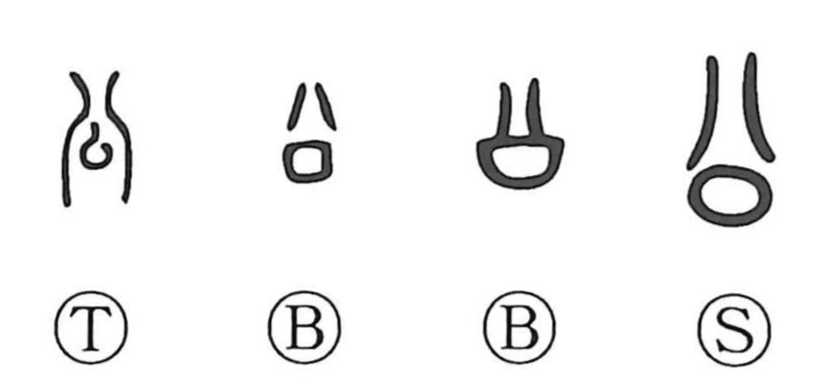

Explanation
公 pictures the plan of a ceremonial court before a palace or ancestral temple. The open area is flanked by walls on either side. Within this precinct, the community’s rites and official affairs were conducted.
The name of the court extended to the palace and ancestral sanctuary, and to the lord worshipped or represented there. It also named the business carried on in that setting: ritual duties, hearings, and other affairs belonging to the ruling house and community.
As this relation broadened beyond the household, 公 came to mean public or official. The conduct expected in that sphere supplied the moral senses of fairness and impartiality. What began as a visible ceremonial space became a word for the authority and common standard maintained there.